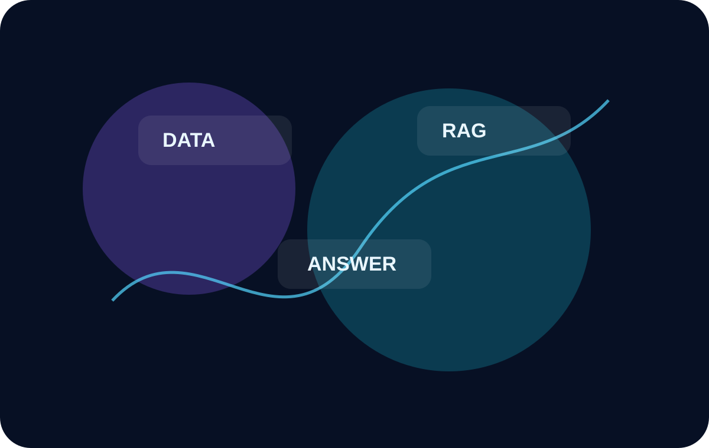
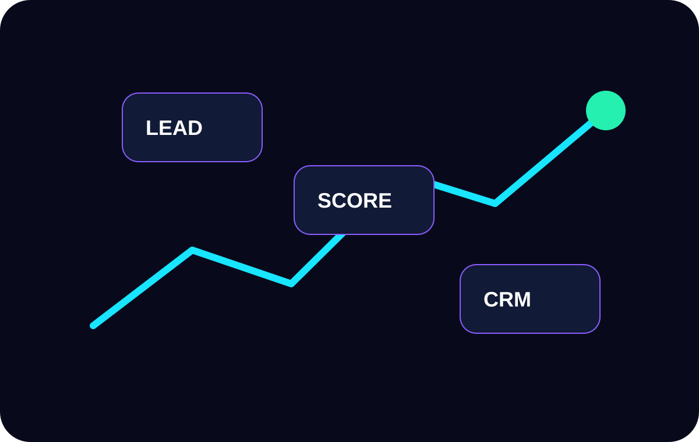
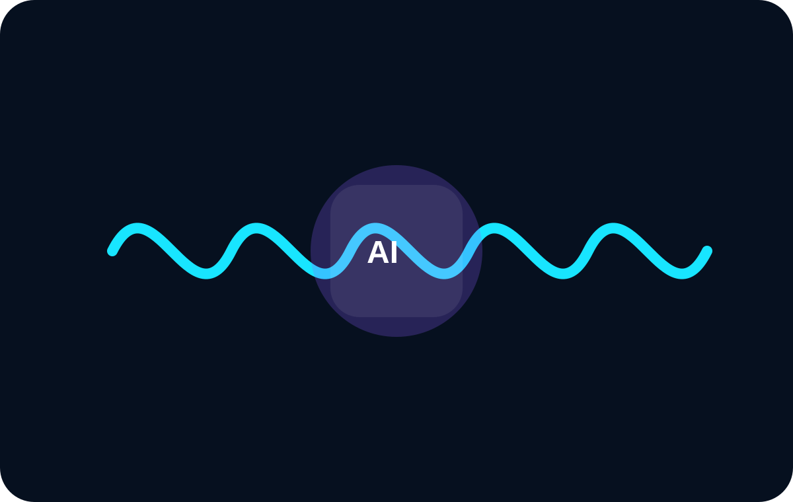
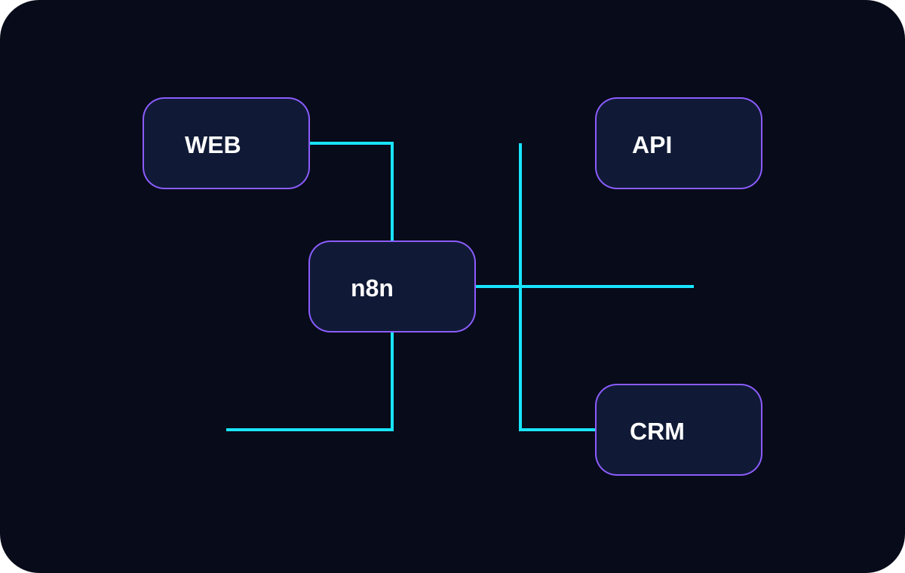

AI-интеграции нового поколения
AI-агенты, которые работают в бизнесе, а не просто отвечают в чате
Проектируем RAG-системы, n8n-сценарии, AI-секретарей, голосовых роботов, автоворонки и CRM/ERP-интеграции, которые дают измеримый эффект.
RAGn8nCRMVoice AIExecutive Agent
AI
InputLeads
BrainRAG
Flown8n
OutputCRM
Каталог решений
Автоматизация для продаж, сервиса и операционных команд
01Core
RPA и AI-агенты
Интеллектуальные сценарии на базе n8n, Make и API: обработка заявок, автоворонки, сервисные процессы, маршрутизация задач и отчёты.
n8nMakeAPICRM
02Knowledge
Корпоративный RAG-агент
Цифровой мозг компании: бот отвечает по регламентам, складам, ценам, скриптам, документам и базе знаний.
Vector DBRerankDocs
03Sales
Лидоруб / Outbound AI
AI ищет контакты, начинает диалог, выявляет потребность и передаёт в CRM уже тёплого лида.
EmailScoringCRM
04Voice
Голосовые и текстовые роботы
Автоматизация звонков, квалификация обращений, поддержка клиентов и передача итогов менеджеру.
Voice AIChatbotSupport
05VIP
AI-секретарь
Агент для почты, календаря, мониторинга конкурентов, чатов, сводок и контроля поручений.
EmailCalendarMonitoring
06Content
Контент-завод
Автоматизация текстов, изображений, видео, сайтов и публикаций с сохранением Tone of Voice бренда.
TextImageVideoWeb
Новости и разборы
Практические материалы про AI-агентов, RAG и автоматизацию

Как корпоративный RAG-агент превращает базу знаний в рабочий инструмент
Как AI-бот отвечает по документам, регламентам, ценам и внутренним данным компании.
Обсудить RAG-систему →
AI в продажах: от холодного контакта до тёплого лида в CRM
AI помогает искать клиентов, вести диалог, квалифицировать заявки и передавать готовый результат.
Запустить лидогенерацию →
Голосовые AI-роботы: где они заменяют первую линию обработки
Входящие звонки, первичная квалификация, ответы на частые вопросы и передача итогов в CRM.
Обсудить робота →
n8n как оркестратор: как связать сайт, CRM, AI и уведомления
Webhook, AI-обработка, создание сделки, уведомления и контроль ошибок в одном workflow.
Собрать workflow →Системный подход
Не «просто GPT», а рабочий контур автоматизации
Мы проектируем связку из данных, моделей, каналов, бизнес-логики и CRM/ERP. AI-агент становится частью процесса.
01Источники данных
CRM, ERP, 1С, документы, таблицы, сайт, почта, чаты.
02AI-логика
LLM, RAG, промпты, правила, функции, роли, ограничения.
03Оркестрация
n8n, Make, API, webhooks, очереди, мониторинг ошибок.
04Бизнес-результат
Сделка в CRM, отчёт, задача, звонок, письмо, уведомление.
Процесс
От аудита до внедрения без лишней бюрократии
AI-аудит
Находим процессы, где автоматизация даст быстрый эффект.
Архитектура
Проектируем сценарий, каналы, данные, роли и KPI.
MVP
Собираем рабочий пилот на реальных задачах бизнеса.
Интеграция
Подключаем CRM, ERP, 1С, email, Telegram, WhatsApp, сайт.
Масштабирование
Улучшаем качество, считаем ROI и расширяем сценарии.
Технологии
Стек, на котором можно строить реальные решения
n8nAutomation
MakeIntegration
PythonBackend
LangChainRAG
OpenAILLM API
PostgreSQLData
1C / CRMBusiness
APIsConnectors
Старт проекта
Готовы найти процессы, где AI даст быстрый ROI?
Напишите нам, какие задачи хотите автоматизировать: продажи, сервис, RAG-бот, n8n-сценарии, AI-секретарь или контент-завод.